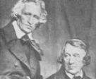
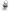

welcome
"Lexicography is a discipline with a long history in most cultures. Typically, it aims at breadth of coverage rather than depth. Depth is achieved in the related discipline of lexicology, through detailed studies of key elements in the lexicon. The aim of lexicography is the systematic collection and explication of 'all' the words of a language (more strictly speaking, all the lexical items of a language, including idioms, multi-word expressions, and bound morphemes, as well as individual words). This encyclopedia contains articles on the history, current state of the art, and available lexicographic resources of the world's major languages, complementing the corresponding articles on individual languages and language situations. In the past two decades, the practice of lexicography has been transformed by the evidence of usage that is now to be found in large electronic corpora, so that the traditional historical-cultural focus of lexicography is beginning to be matched by empirically well- founded accounts of the dynamic nature of the lexicon and the relationship between word meaning and word use. This section also contains articles on some key aspects of onomastics."
Source: Frawley, William J. (1992), Encyclopedia of Linguistics, Oxford: Oxford University Press
What is lexicography?

To the right, you can see the pictures of some famous lexicographers; Mahmud Al-Kasghari, Samuel Johnson, Grimm Brothers and James Murray, from top to bottom.
Useful Links
-
European Lexicographic Infrastructure: https://elex.is
-
DSNA (Dictionary Society of North America): http://www.dictionarysociety.com
-
EURALEX (European Association for Lexicography): http://www.euralex.org
-
AFRILEX (African Association for Lexicography): http://afrilex.africanlanguages.com
-
AUSTRALEX (Australasian Association for Lexicography): http://www.australex.org
-
ASIALEX (Asian Association for Lexicography): http://www.asialex.org
-
SEALEX (Center for Research in Computational Linguistics, Bangkok): http://crcl.th.net/index.html
-
VIETLEX (Vietnam Lexicography Centre): http://www.vietlex.com
-
Dictionary Research Centre at the University of Exeter: http://centres.exeter.ac.uk/drc